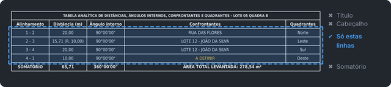
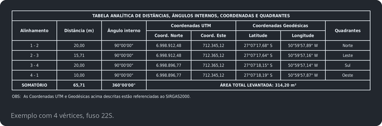
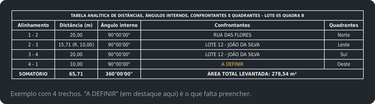
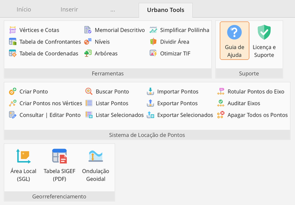

3 dias grátis · sem cartão · começa sozinho
Do desenho ao memorial descritivo em minutos, dentro do AutoCAD.
24 ferramentas feitas por topógrafo para o padrão brasileiro: memorial, tabelas, divisão de área, SIGEF e locação de pontos, numa aba do Ribbon.
AutoCAD e Civil 3D 2023–2027 Instalador completo, sem Python Atualização automática
24ferramentas
SIGEFpadrão INCRA
SIRGAS 2000UTM, fusos 18 a 25
IBGEgeoide hgeoHNOR2020
R$15por mês, tudo incluso
Você ainda faz isso manualmente?
- Montar memorial copiando vértice a vértice do desenho
- Calcular quadrantes e preencher confrontantes na mão
- Fazer conta de divisão de área e depois redesenhar
- Digitar no desenho a tabela do memorial do SIGEF
- Numerar vértices e cotar cada trecho um por um
- Conferir a área certificada em outra planilha
Para começar
As ferramentas que mais economizam horas.
Cada janela mostra o resultado antes de você aplicar. Telas reais do programa.
Mais usada Memorial Descritivo automático
Monte a Tabela de Confrontantes, selecione as linhas no desenho e receba o texto do memorial pronto para copiar para o Word.
- Texto para Retificação, Remembramento ou Desmembramento
- Conferência do fechamento angular (tolerância de 10 segundos)
- O que falta preencher aparece destacado; Copiar descrição e pronto
Ver passo a passo com telas Memorial Descritivo

Tabelas no desenho Tabelas de Coordenadas e de Confrontantes
Distâncias, ângulos internos, quadrantes, coordenadas UTM e geodésicas (SIRGAS 2000), sempre no sentido horário, direto no desenho.
- Validação de fuso e hemisfério antes de gerar
- Tabela de Confrontantes: é a base do Memorial
- Vértices numerados e trechos cotados com Vértices e Cotas
Ver passo a passo com telas Tabela de Coordenadas

Tabela de Confrontantes

Prévia ao vivo Dividir Área sem refazer conta
Divida lote ou gleba por área, percentual ou partes iguais. A janela fica ao lado do desenho e mostra a prévia enquanto você ajusta.
- Corte paralelo, perpendicular, pela testada, por pivô ou por ângulo
- Área, percentual e perímetro de cada parte na tabela
- A polilinha original não é alterada
Ver passo a passo com telas SIGEF / INCRA Conferência SIGEF sem sair do AutoCAD
Calcule a área no Sistema Geodésico Local como o SIGEF, desenhe a tabela do memorial a partir do PDF e converta altitudes pelo geoide do IBGE.
- Área Local (SGL) lado a lado com a área UTM, para conferir com a certificada
- Tabela SIGEF (PDF): lê o memorial e desenha a tabela, sem recálculo
- Ondulação Geoidal com a grade hgeoHNOR2020 do IBGE inclusa
Ver passo a passo com telas
Em movimento
O fluxo em poucos segundos.
Tudo incluso
24 ferramentas, organizadas no Ribbon como no programa.
Clique em qualquer uma para ver o passo a passo com imagens.
Painel
Documentos e tabelas
4 ferramentasPainel
Áreas e georreferenciamento
4 ferramentasPainel
Sistema de Locação de Pontos
12 comandosPainel
Levantamento e imagem
4 ferramentas Grátis, no navegadorCalculadora de Ondulação Geoidal
Converta altitude elipsoidal (GNSS) em altitude normal, e o contrário, pelo modelo hgeoHNOR2020 do IBGE. Sem instalar nada.
Abrir a calculadora
Interface integrada
Uma aba no Ribbon. Nada de comando para decorar.
AutoCAD aba Urbano Tools

Civil 3D 2023 a 2027 configurado sozinho Guia de Ajuda dentro do AutoCAD Atualização automática
Como começar
Do download ao primeiro comando em 5 minutos.
1Instalar
Rode o Setup_urbano-tools. Tudo vem dentro: o motor Python e as bibliotecas já estão no instalador.
2Abrir o AutoCAD
A aba Urbano Tools aparece no Ribbon. No Civil 3D 2023 a 2027 o instalador configura tudo.
3Usar e ativar
Os 3 dias grátis começam sozinhos. Para continuar, envie o ID da máquina pelo WhatsApp e ative.
Quem faz
Feito por quem usa AutoCAD no dia a dia.
"Comecei a programar essas rotinas porque cansei de perder horas fazendo na mão tarefas que o computador resolve em segundos. No início era só pra mim — hoje compartilho porque sei que outros topógrafos enfrentam o mesmo aperto que eu enfrentava."
Luis DambrowskiTopógrafo e criador do Urbano Tools
- Suporte direto com quem desenvolve, pelo WhatsApp
- Atualizações contínuas, sem reinstalar
- Rotina sob medida para o seu escritório, se precisar
- Guia de Ajuda com uma página por comando, mesmo sem licença
Acesso completo
Urbano Tools
Todas as ferramentas. Suporte incluído. Atualizações contínuas.
R$15/mês
Instalação simples · Suporte incluído · Atualizações contínuas · Cancele a qualquer momento
- Memorial Descritivo automático com exportação HTML
- Tabelas de confrontantes e de coordenadas (UTM e geodésicas, SIRGAS 2000)
- Divisão de área por paralela, perpendicular, testada, pivô ou ângulo
- Sistema completo de locação de pontos (12 comandos)
- Vértices e cotas, níveis, arbóreas e simplificação de polilinha
- Área Local (SGL), Tabela SIGEF (PDF) e Ondulação Geoidal (IBGE)
- Otimização de GeoTIFF sem perder o georreferenciamento
- Guia de Ajuda dentro do AutoCAD, em todas as ferramentas
Dúvidas frequentes
Perguntas antes de assinar
Funciona no meu AutoCAD?
Funciona no AutoCAD e no Civil 3D para Windows 10/11 (64 bits). No
Civil 3D 2023 a 2027 o instalador configura tudo sozinho; no AutoCAD e em outras versões basta incluir a pasta no Support Path (2 minutos, passo a passo no
manual). O
AutoCAD LT não é compatível: as ferramentas usam recursos (ActiveX e aplicativos VLX) que o LT não oferece.
Como recebo o instalador e como funciona o teste grátis?
Peça pelo WhatsApp que enviamos o instalador. O teste de
3 dias começa sozinho na primeira vez que o AutoCAD abre com o Urbano Tools e com internet, sem cartão. Quem assina pela Hotmart recebe o acesso por e-mail logo após a confirmação do pagamento. Tudo explicado no
manual de instalação.
Preciso instalar Python ou algum programa extra?
Não. O motor Python e as bibliotecas já vêm dentro do instalador. Você não precisa saber programar nem mexer em LISP: é só usar os botões da aba Urbano Tools.
E se eu cancelar?
Você mantém acesso até o fim do período já pago. Não há multa nem fidelidade — cancele quando quiser diretamente pela Hotmart.
As ferramentas recebem atualizações?
Sim, e automaticamente. Ao abrir o AutoCAD, o Urbano Tools verifica se há versão nova, baixa em segundo plano só o que mudou, e ela passa a valer na próxima abertura — sem reinstalar nada.
Preciso de internet para usar?
Só para ativar a licença e receber atualizações. Depois de verificada, a licença funciona por até 30 dias sem conexão. A licença é por computador: ao trocar de máquina, é só enviar o novo ID pelo WhatsApp.
Tenho suporte se travar em algo?
Sim, suporte direto via WhatsApp incluso na assinatura. Dentro do AutoCAD, o botão Licença e Suporte testa a conexão, faz o diagnóstico e repara a instalação, e gera um relatório para você colar no WhatsApp.
Suporte e desenvolvimento
Encontrou um bug? Tem uma ideia? Precisa de algo sob medida?
Bugs, sugestões e melhorias
Se encontrar algum comportamento inesperado ou tiver ideias de novas funcionalidades, é só avisar — fico feliz em atender. Se precisar adaptar alguma rotina ao padrão do seu escritório, resolvemos juntos.
Tem uma rotina que quer automatizar?
Se há algum processo repetitivo no AutoCAD ou no seu fluxo de trabalho que consome tempo, vamos conversar. Juntos criamos a automação certa e reduzimos o tempo gasto na sua operação.
Em breve
Canal Urbano Tools no YouTube
Tutoriais de cada ferramenta, a instalação completa do zero ao primeiro comando e as novidades a cada lançamento. Ative o sininho para saber quando o primeiro vídeo sair.
Se inscrever